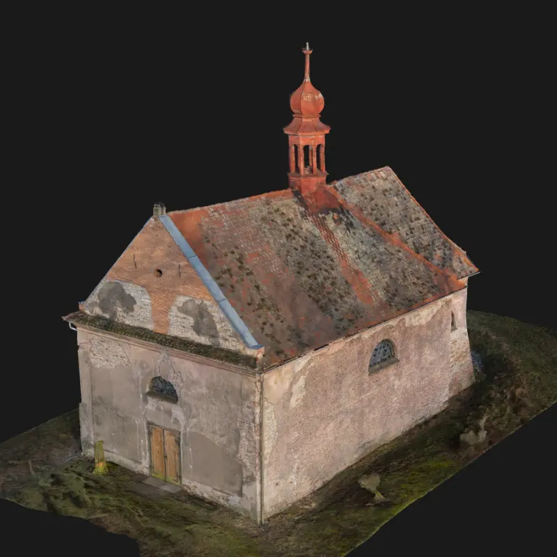
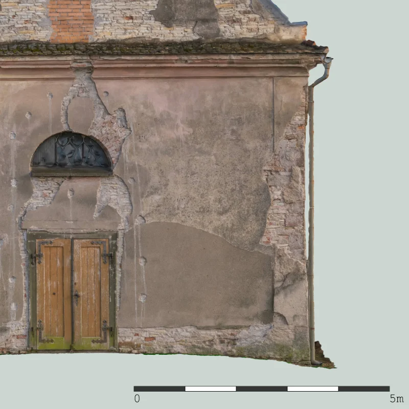
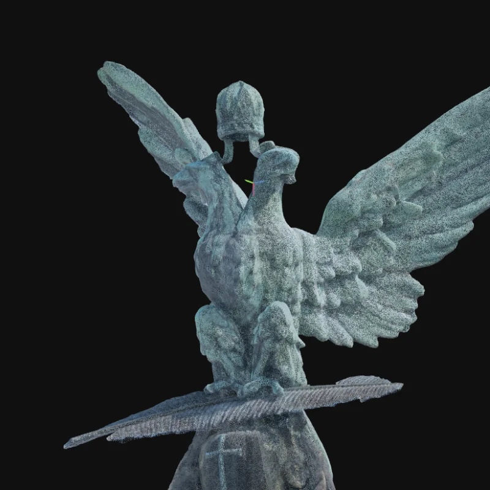
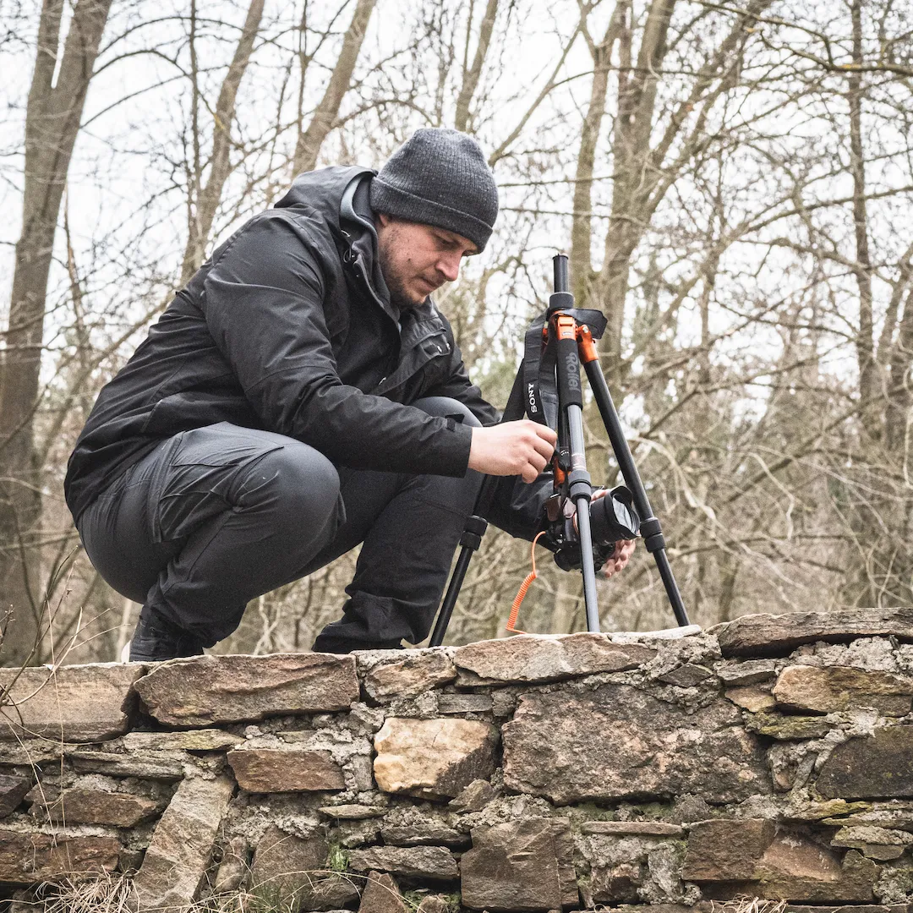

Mé služby
- 3D Skenování: Digitální dvojčata fasád a budov s vysokou přesností pro rekonstrukce i dokumentaci. Data vám předám ve formátech dle vaší preference.
- Virtuální prohlídky: Moderní prezentace prostor pro firmy i památky. Jednoduché interaktivní nafocení prostoru 360 kamerou, které snadno umístíte na svůj web nebo ukážete klientovi rovnou z telefonu.
Ukázky práce


O mně
Jmenuji se Pavel Pošíval a jsem z Poděbrad. Šest let pracuji v oboru geodézie a z toho se čtyři roky aktivně věnuji fotogrammetrii a to jak v práci, tak ve volném čase. Geodézie je fajn obor, ale stále víc mě to táhne k digitalizaci a záchraně památek. Mám rád techniku, precizní práci a to, když staré věci dostávají nový život. V roce 2026 jsem začal svou cestu za tím, stát se kvalitním dodavatelem precizních podkladů a pomáhám lidem s prezentací jejich projektů.

Kontakt
Máte obchod nebo stavbu, která potřebuje přesnou dokumentaci? Ozvěte se mi:
📞 +420 737 032 817
📧 posival3D@gmail.com
Působím hlavně v okresech Nymburk a Kolín. Pokud je váš projekt dál, není problém se domluvit.